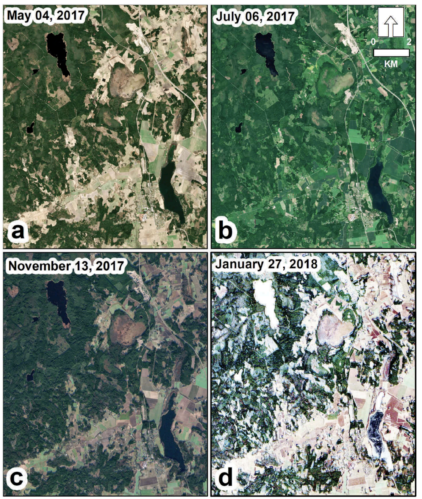
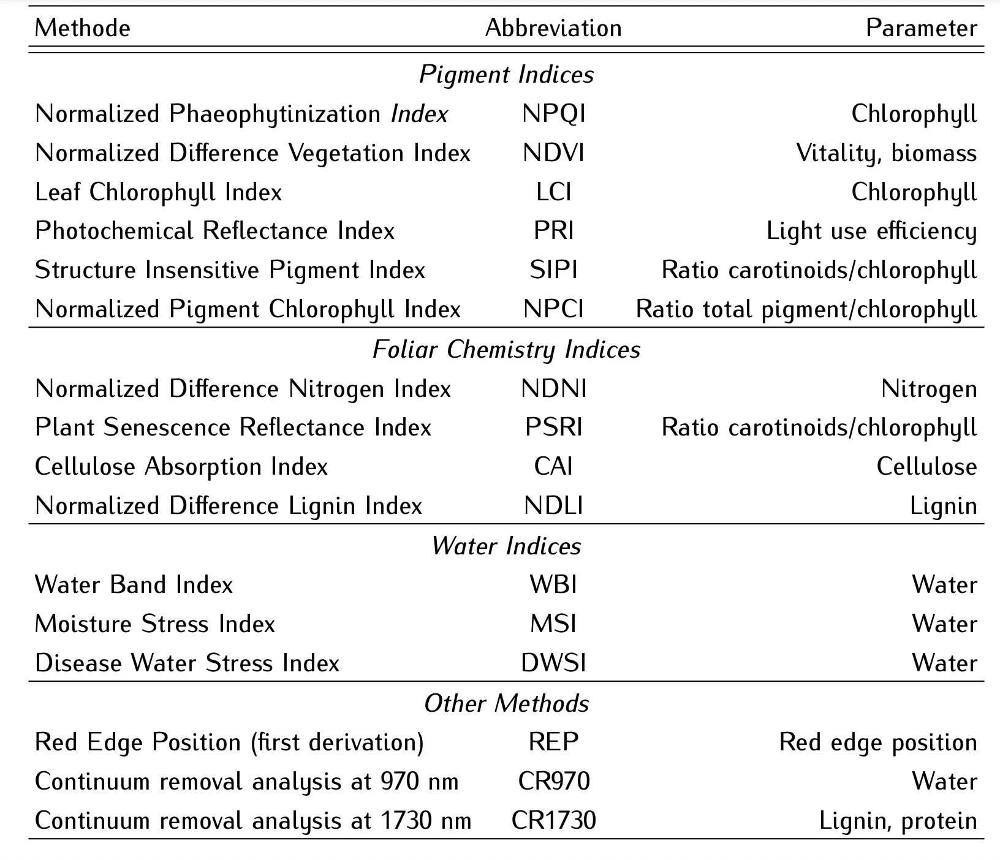
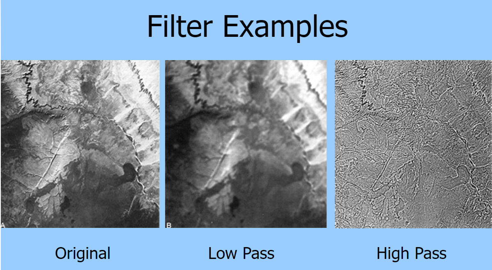
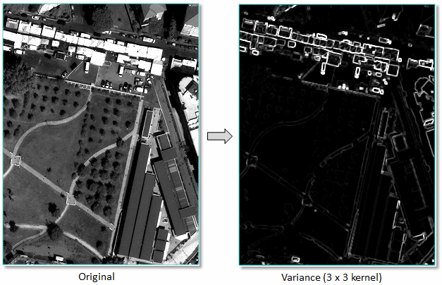
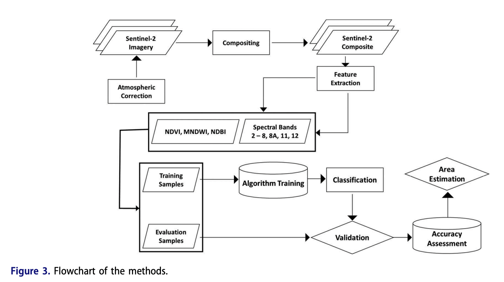
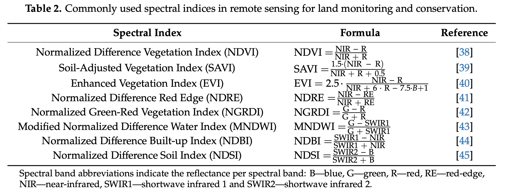

3 Remote sensing data
3.1 Summary
In this week, we will focus on the techniques using for data pre-processing.
3.1.1 Data Correction
Remote Sensing data are usually not ready to use, due to many reasons such as errors from sensor devices and cloud covering. Therefore, it is needed to correct before using. There are many corrections techniques as following:
| Correction | Solutions |
|---|---|
1. Geometric correction Source:Abdul Basith Source:Abdul Basith |
Correction Techniques: Backward mapping (Linear Regression), Resampling Explanation: Remotely sensed image distortions can be happened due to view angle, topography or wind. Therefore, we may use GCP (Ground control points) with polynomial function to correct |
2. Atmospheric Correction Source:Liang et al. 2001 Source:Liang et al. 2001 |
Correction Techniques: Dark object subtraction (DOS), Psuedo-invariant Features (PIFs) Explanation: Absorption and scattering may reduces contrast of image and cause adjacency effect, which is the situation when radiance from pixels nearby is mixed into pixel of interest. One of the solutions is to apply Dark object subtraction (DOS) by searching each band for the darkest value then subtracts that from each pixel. The other method is Psuedo-invariant Features (PIFs), which is to adjust the image based on the regression result. |
3. Orthorectification correction Source:Apollo Mapping, 2016 Source:Apollo Mapping, 2016 |
Correction Techniques: Cosine correction Explanation: According to the image, the street looks curve, even if the reality is the straight street. Therefore, cosine correction can be applied to remove distortions and making the pixels viewed at nadir (straight down). |
3.1.2 Technical Terms
There are some specific terms used in remote sensing. We summarise some of them which are usually found in the research paper.
| Term | Definition |
|---|---|
| Digital number (DN) | Intensity of the electromagnetic radiation per pixel |
| Radiance | How much light the instrument sees in meaningful units |
| Reflectance | the ratio of light leaving the target to amount striking the target. |
| TOA reflectance | Measure radiation going down and up in a ring |
| Surface reflectance | Measure radiation going down |
| hemispherical reflectance | All of the light leaving the surface goes straight to the sensor |
3.1.3 Image Enhancement
In this process, we will try to extract more features or emphasize certain features, similar to features engineering. We can also apply to imagery to improve the visual appearance.
| Enhancements | Description |
|---|---|
| 1. Ratio  Source: PhysicsOpenLab |
There are many indices derived from band rationing. They can be used to highlight areas with some spectral trait. One of the most popular indices derived by rationing is the Normalised Difference Vegetation Index (NDVI). It can be used to classify between healthy vegetation and unhealthy vegetation areas. We can calculate NDVI from NIR and RED bands by applying the equation as follows: \[NDVI= \frac{NIR-Red}{NIR+Red}\] Because the NDVI index is based on the concept that healthy and green vegetation reflects more in the NIR but absorbs in the Red wavelength, the new metric is highly useful. There are tons of remote sensing indices. More indices can be found here: https://www.indexdatabase.de/ |
| 2. Filtering Source: Dwain Casey |
Filtering refers to moving window operations and save as a separate raster file, such as Laplacian filter. There are two types of filtering, which are 1. Low pass - averages the surrounding pixels 2. High pass - enhance local variations |
| 3. Edge enhancement |
Edge enhancement is the process to make edges appear in a shaded relief. It is particularly useful for images that have low contrast or are affected by noise, where it can be difficult to distinguish between adjacent features. |
| 4. Data fusion | Data fusion is the process of appending new raster data to the existing data (stacking). |
| 5. Texture analysisSource: Harris | Texture analysis examines patterns, structures, and variations in the texture of an image, which can be used to distinguish different features on the ground. Texture refers to spatial variation of gray values. |
3.2 Applications
In this section, we will give examples of remote sensing research and analyse data pre-processing and image enhancement steps in the research.
- Land cover and land use classification performance of machine learning algorithms in a boreal landscape using Sentinel-2 data (Abdi 2019)

- Summary: It aims to conduct land use classification and compares the classification performance of four machine learning algorithms (support vector machines, random forests, extreme gradient boosting, and deep learning) in a complex boreal landscape in south-central Sweden using Sentinel-2 satellite data. The satellite imagery used for the classification were multi-temporal scenes from Sentinel-2 and the study area consists of eight land-cover and land-use classes. The researcher achieved the overall accuracy of (0.758 ± 0.017) by using support vector machines.
- Data Pre-processing:
- Atmospheric correction: to converts the top-of-atmosphere reflectance Level-1C data to a bottom-of-atmosphere (BOA) reflectance
- Ratio: The normalized difference vegetation index (NDVI), the modified normalized difference water index (MNDWI) and the normalized difference built-up index (NDBI) were calculated to help capture vegetation, water, and artificial surfaces, respectively.
- Data Fusion: All calculated bands were appended in each Sentinel-2 scene. Therefore, the total layers of each scene are 13 layers.
- Comments: The workflow of land cover and land use classification is quite good and complete. There are many data pre-processing techniques used in this work. However, the accuracy of classification in some classes is still not satisfactory, such as to identify open land. The producer’s accuracy of locating open land is only (0.44 ± 0.05). More indices from rationing should be used to help classify this class, such as SAVI, EVI and NDRE (Radočaj et al. 2020).

3.3 Reflection
Content: There are many techniques of data pre-processing which are reviewed in this week. Although I conducted many machine learning projects, there are some data correction or image enhancement techniques that I forgot to do. After considering every data pre-processing techniques and apply the suitable techniques in each task, it is expected that the accuracy of the machine learning model or the quality of outputs would improve more or less.
Application: Since there are so many indices of remote sensing to use from rationing techniques, it is good to see which indices researchers selected to use. Previously, my research project is related to agriculture, so I performed crop classification by using only indices to capture healthy vegetation, such as NDVI. In this week, I have learnt so many new remote sensing indices, which could be useful in the future. However, one question in my mind is that deep learning is known for its ability of automatic feature extraction (Shaheen, Verma, and Asafuddoula 2016). I would like to know whether convolutional neural network or other deep learning models can automatically extract remote sensing indices by itself and even some undiscovered indices that may help improve the accuracy.